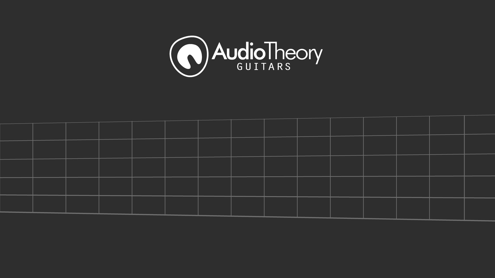
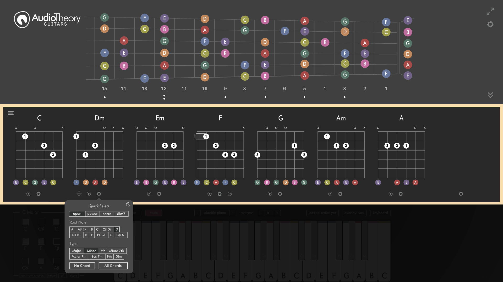
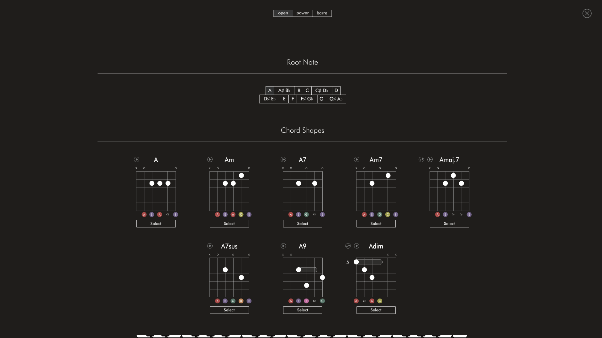
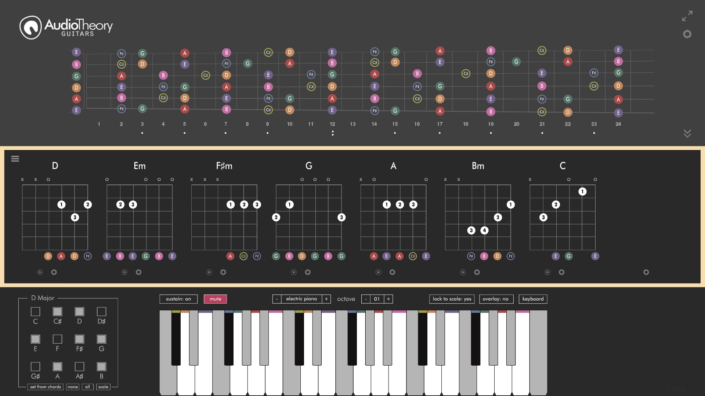
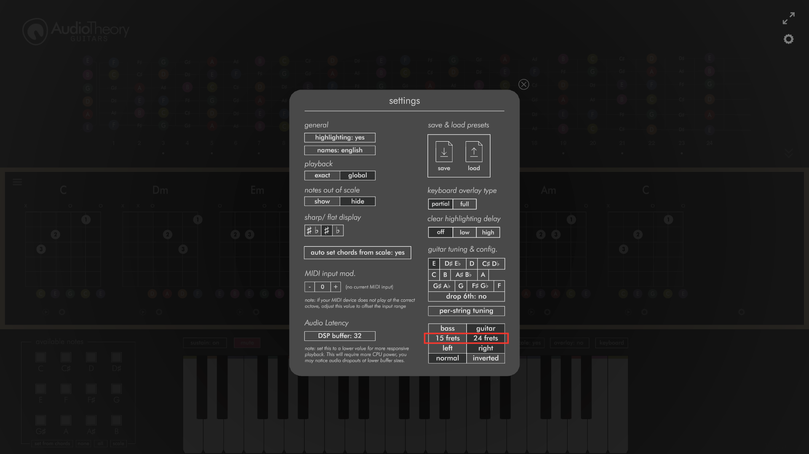
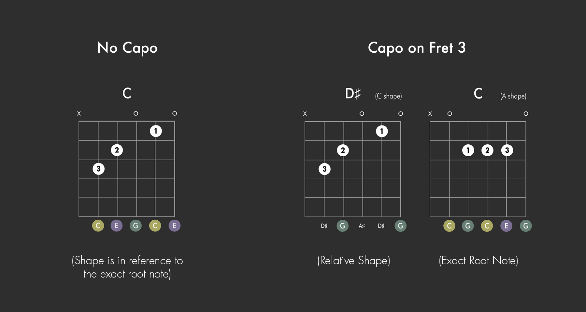
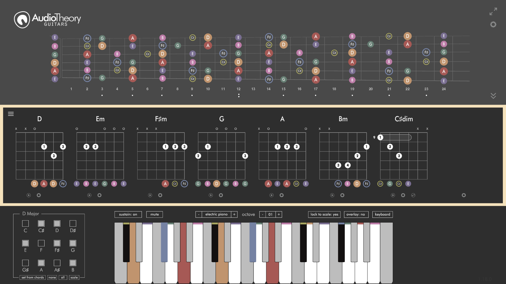
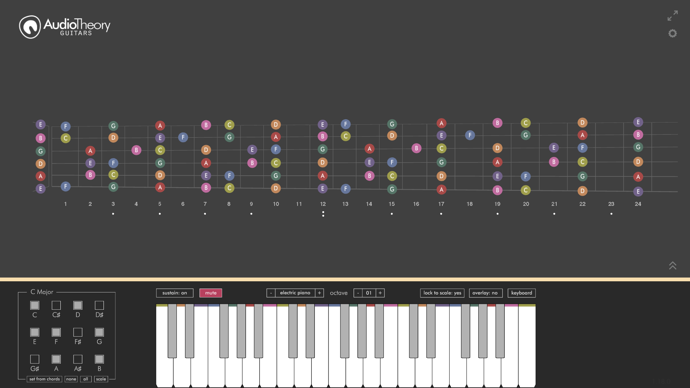

AudioTheory Guitars – 1.18.0
24 Fret View + Improved Chord Selector Update

AudioTheory Guitars version 1.18.0 is here and this update adds in some exciting new features. These include the option for a 24 note fretboard (as an alternative to the existing 15 fret view) and a new chord selector for open chords.

Improved Chord Selector
The first new feature is an improved chord selector for open chords. This mirrors the layout already in place for power and barre chords, where you select a cord as a combination of a root note and position. It's easier to use as there are less buttons than before, you can see from the selector itself which chord is currently loaded, and I've added a set of open chords for the sharp/ flat notes so there's a whole bunch of new chord shapes to choose from too.

24 Fret View
This is the option to select a full 24 fretboard diagram as an alternative to the default 15 fret diagram. This lets you see two octaves at once, and comes in handy for a few obscure chord/ capo combinations that go past fret 15.

You can choose the desired fretboard size from the options popup.

Relative shape/ exact note selection options for chords
When you have a capo applied on the fretboard, you will see an additional tab for choosing between a 'relative shape' and 'exact root note', which are two different ways to think about the chord you are selecting.

'Relative shape' was the only selection method previously. This is what you typically see on online tabs for songs played with a capo. For example, a C cord 'shape' will always be the same, but the actual root note of the chord increases with the capo. So at capo position 3, the actual chord being played is a D# (C+3).
It will depend on the context, but working with shapes is often the easiest way to understand what you're playing. However, for the times where you want to see the exact chord for the selected root note, you've now got the option to identify a chord this way too.

Clear Highlighting Delay
There's another new option in the settings too, this is three different time durations for which the keyboard colour highlighting will clear once input is no longer received. By default this is turned off, which means as soon as you unpress a note then it stops being highlighted – what you see on screen directly matches up to the input.
The two alternatives are a short (roughly .2 seconds) and a long (roughly 1 second) delay before the highlighting is cleared. These are primarily designed for fast piano players – if you're quickly sending input via a connected MIDI device then real-time highlighting means that the notes are sometimes only highlighted for a very small amount of time, and this is a great way to keep them emphasised for longer.

One more change, the per-string tuning settings have been moved into the options popup. This makes the fullscreen fretboard view look a bit neater.
All updates are free for owners of AudioTheory Guitars. If you purchased directly then you can download the latest version from your Gumroad account.
For Steam users, new updates can be downloaded through the Steam client.
For new customers, you will be purchasing and downloading the latest version.
×